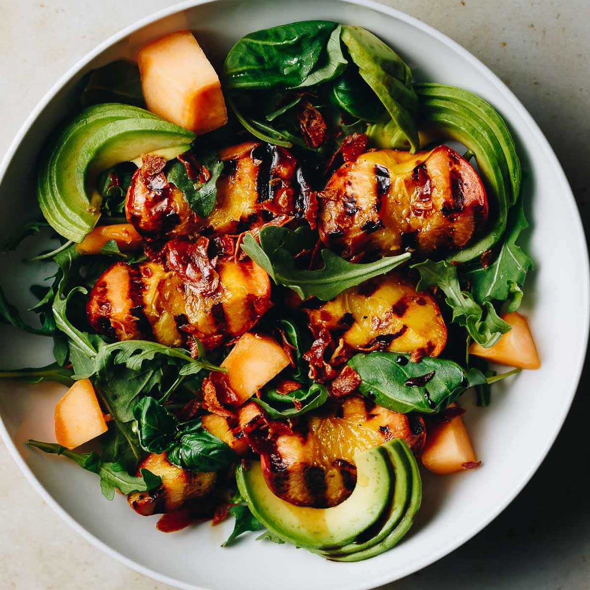

Grilled Peach & Halloumi Salad
"Yes, we are grilling fruit. Trust me, I'm a professional food-maker."

Ingredients
- 3 Fresh Peaches, sliced
- 200g Halloumi cheese
- Arugula (Rocket) leaves
- Honey and Balsamic Glaze
Step-by-Step Instructions
- Lightly oil your grill pan. Grill the peach slices for 2 mins each side.
- Grill the Halloumi slices until they have golden grill marks.
- Lay a bed of arugula on a bright yellow plate.
- Top with peaches and cheese. Drizzle with honey and balsamic.